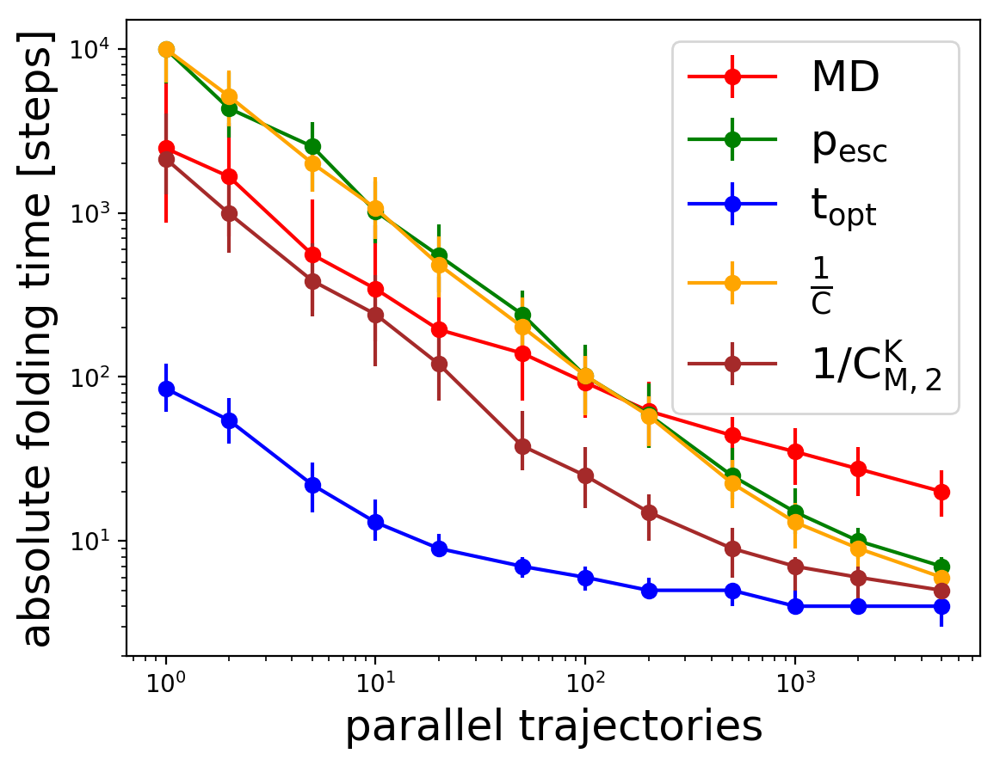
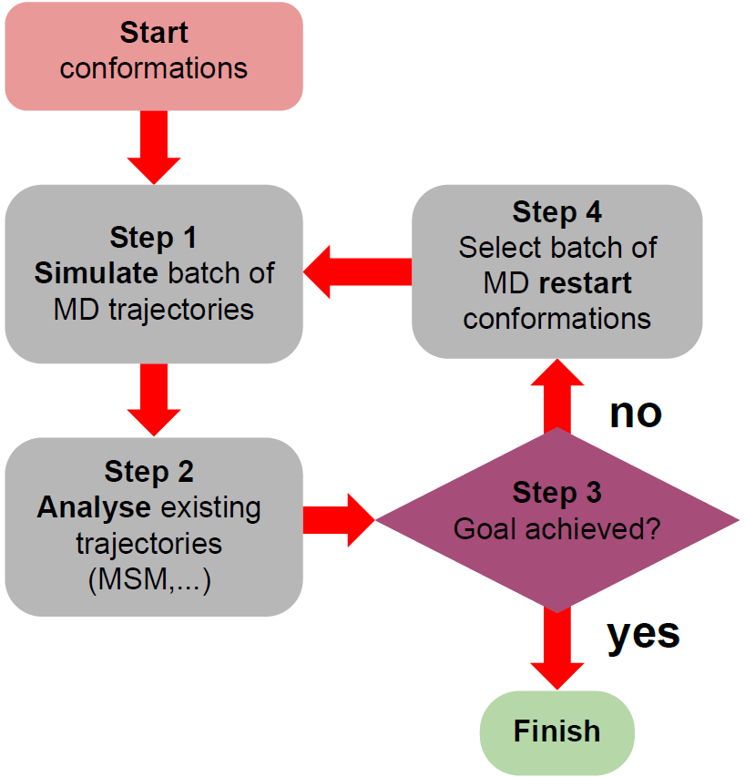

Drag the protein around to see details. Left: Protein A3D is one of the proteins investigated in my work. Only protein backbone shown. PDB: 2A3D Right: A3D trajectory
About me
I am a physicist, solving challenging problems in biophysics. Currently, I am a PhD student at Rice University at CTBP in Clementi lab, which leverages Machine learning and Deep learning to solve scientific research problems around proteins and protein behavior. For example, my team has used machine learning and deep learning for adaptive sampling and coarse-graining proteins. Above and below are some of the proteins I'm working with. To see details of the protein pull on the visualization.
My current research focuses on a massive challenge which slows down our ability to simulate biology on computers. The challenge is how to reach biological timescales. Many biological processes take fractions of a second, but even that is longer than what current computers can reach. Using classical molecular dynamics the maximum timestep is around 5 femtoseconds, where a femtosecond is 1/1,000,000,000,000,000 of a second. With current CPUs and GPUs or even custom hardware [D.E. Shaw et al., 2014] we can simulate a huge number of these tiny timesteps in a day. This means we can simulate around 100 microseconds/day for a tiny biological system. The challenge is clear, for most of the relevant biological systems we can't reach the millisecond of longer timescales we would require to investigate and understand the biology from simulations. The short timescales we can reach with simulations already allowed us understand some aspects of photosynthesis, immune system, Alzheimer's disease and many other biological challenges.
NTL9 protein (center) in water box (red) with ions (green).
Publications
[1] Extensible and Scalable Adaptive Sampling on Supercomputers. E. Hruska et al., 2019, https://arxiv.org/abs/1907.06954
[2] Quantitative Comparison of Adaptive Sampling Methods for Protein Dynamics, E. Hruska et al., J.
Chem. Phys. 2018, https://doi.org/10.1063/1.5053582
[3] ExTASY: Scalable and Flexible Coupling of MD Simulations and Advanced Sampling Techniques, V.
Balasubramanian et al. including E. Hruska , 2017, Proceedings of the 2016 IEEE 12th International
Conference on e-Science, e-Science, 361–370, https://doi.org/10.1109/eScience.2016.7870921
Foundational research of adaptive Sampling
In my paper [Hruska et al., 2018] titled “Quantitative Comparison of Adaptive Sampling Methods for Protein Dynamics,” I showed a systematic evaluation of selected adaptive sampling strategies. It allowed me to predict not only the speed up with adaptive sampling for a particular protein but also the scalability and the optimal adaptive sampling strategy for a particular protein and particular goal. The investigated 8 proteins in Figure 1 left are relatively fast-folding due to limited reference data. To obtain acceptable statistics I converted the reference trajectories into Markov State model. By generating Markov chains I could simulate adaptive sampling and compare different adaptive sampling strategies. The results in [Hruska et al., 2018] show that for protein folding macro-state based strategies like $1/C_{M,2}^{K}$ are the best choice from the investigated strategies. The macro-state strategy determines metastable regions and distribute new restarting points according to the statistics of different metastable regions, details in the paper. For general protein landscape exploration, micro-state based adaptive sampling strategies like $\frac{1}{C}$ are better. For the first time, I gave a theoretical upper limit for the speed up possible with adaptive sampling in Figure 1 left with the strategy $t_{opt}$. The maximum possible speed up increases for slower folding proteins, showing that for more complex proteins or larger transition barriers the adaptive sampling shows larger advantages. The scaling in Figure 1 right shows that all adaptive sampling strategies scale well parallelization. Only at parallelizations above 1000 the speed up plateaus.


left: Theoretical maximum speed up for individual proteins. The x-axis is folding time of the proteins. It shows a roughly linear increase of speed up with folding time. right: Scaling of the time to solution of folding the protein for 5 different strategies. Higher parallelization reduces the time to solution for all strategies. molecular dynamics is plain molecular dynamics. $t_{opt}$ and $p_{esc}$ are theoretical best strategies to explore the protein or fold the protein. $\frac{1}{C}$ and $1/C_{M,2}^{K}$ are two different adaptive sampling strategies. Details in [Hruska et al., 2018].
There is an significant opportunity to improve the currently available adaptive sampling strategies. One challenge is how to increase the speed up reachable with adaptive sampling closer to the theoretical upper limit. Another challenge is developing adaptive sampling strategies which are optimized for different goals. Currently, only the exploration or the folding of the protein are optimized. Novel ways of extracting relevant information from raw data are of interest to develop new adaptive sampling strategies.
Software development for adaptive sampling


Figure 2: left: The iterative execution steps in ExTASY framework. right: The software backed of ExTASY shown ensures at the same time great scaling performance and a simple frontend interface. The modular frontend of ExTASY allows to implement different complex workflows such as adaptive sampling in a easy maintainable way. Figures from [Hruska et al., 2019].
The development of the ExTASY framework with collaborators is shown in two papers. The ExTASY (Extensible Toolkit for Advanced Sampling and analYsis) framework simplifies the execution of adaptive sampling on HPC since it's modular and python based. The first paper [Balasubramanian et al., 2016] titled “ExTASY: Scalable and Flexible Coupling of MD Simulations and Advanced Sampling Techniques” introduces the ExTASY framework. It showed that different sampling strategies can be easily executed with the same framework, by utilizing Python-based “templated scripts” that interface to an interoperable and high-performance pilot-based run time system. The easy setup for different HPC systems was shown on three different supercomputers: ARCHER, Blue Waters, and Stampede. ExTASY showed good scaling up to 1000s of molecular dynamics simulations. Figure 2 left shows the iterative workflow central to adaptive sampling. The analysis step automatically analyses the previously generated trajectories and determines protein conformations for starting new molecular dynamics trajectories in the next iteration. Figure 3 right shows that ExTASY's inherent modularity of the framework allows simplifying the complex workflow by encapsulating the complexity in different software layers. This allows to swap out the molecular dynamics packages or the particular sampling methods with little changes.

Figure 3: Adaptive sampling with ExTASY (black diagonal lines) explores the same areas of the protein folding landscape as plain molecular dynamics (colored background). This result shows that adaptive sampling reaches accurate results and explores the whole protein energy landscape [Hruska et al., 2019].


Figure 4: left: ExTASY explores the protein Villin about one magnitude faster than reference plain molecular dynamics simulations. right: Adaptive sampling (red) is an order of magnitude faster to reach the same accuracy of protein dynamics than plain molecular dynamics (blue). The protein dynamics accuracy is measured by relative entropy between the reference data and the simulated data. Figures from [Hruska et al., 2019]
The second paper [Hruska et al., 2019] titled “Extensible and Scalable Adaptive Sampling on Supercomputers” shows on the example of three small, but realistic, proteins the advantages of the ExTASY framework. Figure 4 shows that the protein energy landscape and the protein dynamics were accurately recovered. The black diagonal lines representing the areas explored by ExTASY match the reference results shown in color. The adaptive sampling started with an unfolded state and was able to find the folded state shown. The speed up to explore the protein is shown in Figure 4 left. The red line shows the adaptive sampling is about one order faster than the plain molecular dynamics reference. To compare the accuracy of the protein dynamics the Markov state model relative entropy between the adaptive sampling data and the reference data is shown in Figure 4 right. A description of Markov state model relative entropy is in [Hruska et al., 2019]. The same protein dynamics accuracy is reached with adaptive sampling about one order faster.